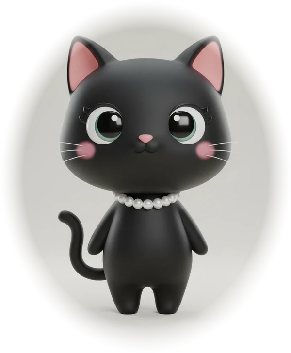

MENU 04 · CONTENT TOOLS
글쓰기도
반은 데이터.
SNS 운영을 실험처럼 하기 위해 만든 기록·분석 도구입니다.
ELLA'S SIDE LEDGER · SIDE PROJECTS · EST. 2024

MENU 01 · FINANCE & ACCOUNTING
실무에서 손으로 반복하던 계산과 서식 변환을 자동화한 도구들입니다.
MENU 02 · MARKET SIGNALS
매일 아침 자동으로 계산해 메신저로 보내주는 규칙 기반 시그널입니다. 예측이 아니라, 정해둔 규칙을 지키기 위한 장치입니다.
MENU · INFINITE BUYING
라오어 무한매수법을 규칙 그대로 자동화한 프로젝트입니다. 감정 대신 분할과 익절 규칙을 매일 지키게 만드는 장치입니다.
MENU 03 · AUTOMATION
하루에 한 번 확인하면 되는 일들을 스크립트에 맡겼습니다.
MENU 04 · CONTENT TOOLS
SNS 운영을 실험처럼 하기 위해 만든 기록·분석 도구입니다.
ABOUT
회계법인에서 펀드 감사와 재무보고를 담당하고 있습니다. 영문 재무제표를 한국 서식으로 옮기는 일을 오래 하다 보니, 같은 일을 두 번 하지 않으려고 코드를 배우게 됐습니다.
여기 있는 프로그램들은 모두 업무나 생활에서 실제로 불편했던 지점에서 시작했습니다. 완성도보다 "내가 매일 쓰는가"를 기준으로 남겨두었습니다.
쓰시다 막히는 부분이나 개선 아이디어가 있으면 아래 연락처로 알려주세요.
CONTACT